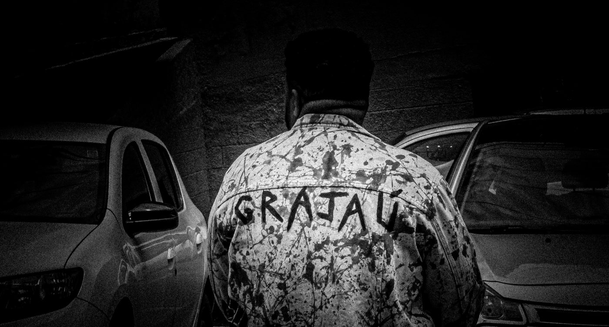

Vitória Trans: Um olhar sobre a cultura trans e queer em São Paulo

Filme aborda as vivências de sete pessoas trans na capital paulista, destacando a riqueza e a diversidade da cultura LGBTQIAP+ na cidade.

O Coletivo Queer apresenta seu mais recente projeto, o documentário Vitória Trans, lançado em junho de 2024. A estreia aconteceu na zona central de São Paulo, na Galeria Olido, dia 18 de junho. Dirigido por Ana Melquiades, PH Silva, Rô Vicentte e Thais Carvalho, o filme conta com a produção executiva de Rô Vicentte e trilha sonora de Luccas ZM.
Com uma abordagem sensível e aprofundada, Vitória Trans busca mostrar as diversas facetas das vidas de seus protagonistas, abordando suas conquistas, desafios e a importância de suas presenças na sociedade paulistana. O documentário teve sua pré-estreia no CEU Navegantes e no Centro Cultural Grajaú, ambos na Zona Sul, e agora está sendo exibido em equipamentos culturais nas periferias da capital paulista, cumprindo um circuito que visa alcançar e envolver a comunidade periférica.
A narrativa do filme é construída a partir do ponto de vista do narrador, sobrepondo imagens capturadas ao longo das histórias apresentadas. A edição proporciona uma imersão única, criando um cenário que se conecta intimamente com as histórias compartilhadas. O projeto culminará em 13 apresentações gratuitas do documentário, abertas ao público.
O foco principal é o público periférico das quatro zonas de São Paulo, com uma atenção especial voltada para a comunidade LGBTQIAP+, destacando a vivência das pessoas trans. O Coletivo Queer está comprometido em proporcionar amplo acesso a essa expressão cultural, promovendo a inclusão e a visibilidade das histórias e experiências trans na sociedade.
Com oito anos de existência, o Coletivo Artístico Queer, formado principalmente por artistas LGBTQIAP+, utiliza ações poéticas para abordar questões sociais e promover a diversidade. O coletivo já montou diversas produções, incluindo o espetáculo "A Última Nora" em 2016, baseado em relatos pessoais e explorando temas de opressão social e descobertas de identidade não-binária. Em 2018, apresentou o espetáculo de dança "Amar Para (Re)Existir", focado no ato de amar como forma de sobrevivência.
Além disso, realizou mais de 20 ações poéticas pela cidade de São Paulo. Destaca-se o "Calendário 2020 - Zodíaco Queer", uma intervenção fotográfica marcante que reuniu mais de 70 artistas e ativistas LGBTQs. O coletivo é independente e suas ações foram realizadas sem financiamento público ou privado, à exceção do experimento cênico "Não Sabemos Partir", premiado no Festival Itaquerendo Folia.
O documentário é um testemunho da força e da resiliência da comunidade trans em São Paulo. Cada uma das histórias apresentadas oferece um olhar único sobre as vivências diárias e os desafios enfrentados pelos indivíduos trans na cidade. Alexandre Kiyohara, publicitário e atual Head de Diversidade e Inclusão da B3 - Bolsa do Brasil, traz uma perspectiva profissional e pessoal sobre a inclusão. Ariel Bernardi, baritonista e membro da Academia de Ópera do Theatro São Pedro, destaca a presença trans no cenário artístico. Carolina Iara, travesti, intersexo e codeputada estadual, representa a luta por direitos sociais e humanos. Erika Hilton, deputada federal eleita e ativista, compartilha sua trajetória política e de ativismo. Gabriel Romão, TEDxSpeaker e especialista em diversidade, traz sua experiência de mais de 15 anos no campo de desenvolvimento de pessoas e inclusão. Jupi77er, MC e compositor, fala sobre sua jornada como artista transmasculino e empreendedor. Rô Vicentte, artista e comunicadora, oferece uma visão sobre a criação de conteúdos que promovem a visibilidade trans.
O documentário Vitória Trans é uma celebração da diversidade e uma ferramenta poderosa para a inclusão, destacando as histórias e vivências de pessoas trans e queer em São Paulo. As exibições gratuitas em diversas regiões da cidade refletem o compromisso do Coletivo Queer em promover a visibilidade e o entendimento das realidades trans nas periferias paulistanas. Com apoio da São Paulo Film Commission, Spcine, São Paulo Capital da Cultura e Cidade de São Paulo Cultura, o filme promete ser um marco na representação das experiências trans na cultura brasileira.
Assista ao trailer aqui:
Vitória Trans
Local: Fábrica de Cultura de Brasilândia (Zona Norte)
Data: 20/06 - 20h (Quinta-feira)
Endereço: Av. General Penha Brasil, 2508 - Brasilândia
Local: Fábrica de Cultura Capão Redondo (Zona Sul)
Data: 22/06 - 14h (Sábado)
Endereço: Rua Bacia de São Francisco, s/n - Capão Redondo
Local: Centro Cultural Penha (Zona Leste)
Data: 23/06 - 16h (Domingo)
Endereço: Largo do Rosário, 20 - Penha
Local: Fábrica de Cultura Osasco (Grande SP)
Data: 29/06 - 10h (Sábado)
Endereço: R. Santa Rita - Rochdale, Osasco
Local: Fábrica de Cultura de Jaçanã (Zona Norte)
Data: 29/06 - 15h (Sábado)
Endereço: Rua Raimundo Eduardo da Silva, 138 - Jaçanã
Local: CEU Paraisópolis (Zona Oeste)
Data: 30/06 - 14h (Domingo)
Endereço: R. Dr. José Augusto de Souza e Silva, S/N - Jardim Parque Morumbi
Local: Fábrica de Cultura Vila Nova Cachoeirinha (Zona Norte)
Data: 06/07 - 10h (Sábado)
Endereço: R. Franklin do Amaral, 1575 - Vila Nova Cachoeirinha
Local: Fábrica de Cultura Brasilândia (Zona Norte)
Data: 06/07 - 14h (Sábado)
Endereço: Av. General Penha Brasil, 2508 - Brasilândia
Local: Fábrica de Cultura Jardim São Luís (Zona Sul)
Data: 13/07 - 10h (Sábado)
Endereço: Rua Antônio Ramos Rosa, 651 - Jardim São Luís
Local: Fábrica de Cultura Diadema (ABC)
Data: 13/07 - 15h (Sábado)
Endereço: R. Vereador Gustavo Sonnewend Neto, 135 - Centro, Diadema